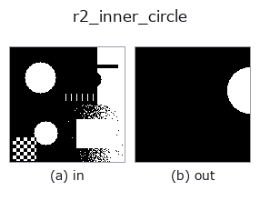

region op• Data kinds: region → region
• Call: fullseye.apply(img, "r2_inner_circle", a=0.5, b=0.5) (the 2-D model is one image plus two scalar knobs a,b∈[0,1])
• HALCON equivalent: inner_circle (the HALCON reference is a useful guide to its meaning and parameters)

*The figure is the actual output on a synthetic 128×128 input. Left: input, right: output. Point clouds are drawn as a top-down scatter (brightness = z), 1-D series as a line plot, volumes as the maximum-intensity projection along z, videos as the middle frame, complex images as magnitude; return values that are not pictures are shown as the values themselves.*
Sweeping knob a (0.1 / 0.5 / 0.9, the other knob at its default):
▸ r2_inner_circle: knob a sweep (docs site)
*Knob b does not change the output (measured: identical at 0.1 / 0.5 / 0.9).*
Stages (the ops that come before → this op, left to right):
▸ r2_inner_circle: stages (docs site)
On other images (synthetic scene / photo / coins. Top row: inputs, bottom row: their outputs. Knobs at default):
▸ r2_inner_circle: other inputs (docs site)
Largest inscribed circle drawn as a mask (a scales drawn radius; a=0.5=exact).
> The detailed description below is the original text — the summary and the headings are translated.
領域の最大内接円をマスクとして描く。入力を `> 0.5` で前景マスクに直し、
`scipy.ndimage.distance_transform_edt` で各前景画素から最近傍の背景画素
までの距離を取り、その最大値 `r0 を与える画素を中心 (cy, cx)` とする
(最大値が複数あれば行優先で最初の画素)。描く半径は
`r = r0 * (0.6 + 0.8*a) で、a=0 で 0.6 倍、a=0.5 で r0` そのまま、
`a=1 で 1.4 倍(a は [0,1] に clip、非有限なら 0.5)。b` は未使用。
返り値は入力と同形の float64 0/1 マスク(円板 `(y-cy)^2+(x-cx)^2 <= r^2`)。
前景が無ければ全零。座標は (row, col)。
注意: `r0 は「背景画素の中心までの距離」なので、a=0.5` でも描いた円板は
領域の縁を 1 画素程度はみ出すことがある(10x20 の矩形で 2 画素、半径 7 の
円板で 12 画素の外側画素を実測)。厳密に内側へ収めたいなら `a` を少し
下げる。領域が複数の連結成分からなる場合も内接円は 1 つだけ(最も太い成分の
もの)。3 次元配列 (H,W,C) は (H, W*C) に平坦化されるのでカラー画像は渡さない。
前段に `threshold や select_largest`、対になる外接円は
`r2_smallest_circle`(両者の半径比が真円度の粗い指標になる)。
• gallery2d_region family guide
• Sample-data catalog (download URLs / licences) — 2-D uses skimage.data (BSD/public domain) plus synthetic images; 3-D lists download URLs for real data sources (Stanford, PDS, …).
• Operator provenance and references — the sources of the research/methods this op family came from.
• The canonical algorithm (author, year) and its uses are named in the family usage guide above.
The program below has been verified to run (same input as the figure). In Studio's help this block becomes buttons that load and run it on the spot.
threshold 0.50 0.50 r2_inner_circle 0.50 0.50
▸ Load this pipeline · Load & run
• gallery2d_region — py -3.11 examples/gallery2d_region.py
region as input)identity · reg_erode · reg_dilate · reg_open · reg_close · fill_holes · select_largest · remove_small
region)reg_erode · reg_dilate · reg_open · reg_close · fill_holes · select_largest · remove_small · invert_region
*Provenance: ops.py — 2D operator registry. This per-op note is generated by tools/opdocs.py md (do not hand-edit).*
© 2026 Kazufumi Furuse — Fullseye operator documentation. Licensed under Apache-2.0.
{kind=link}
{kind=link}
{kind=link}